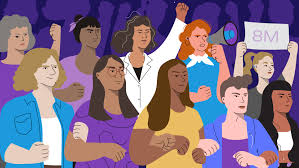

La segunda ola feminista se sitúa desde la referencia de los estudios feministas anglosajones entre principios de la década de 1960 hasta finales de la década de los 80 coincidiendo con el inicio del movimiento de liberación de las mujeres en Estados Unidos. Según esta referencia, mientras la primera ola del feminismo anglosajón se enfocaba principalmente en la superación de los obstáculos legales (de jure) a la igualdad (sufragio femenino, derechos de propiedad, etc.) en la segunda ola del feminismo en Estados Unidos las reivindicaciones se centraban en la desigualdad no-oficial (de facto), la sexualidad, la familia, el trabajo y el derecho al aborto
El feminismo se divide en tres olas: la primera ola, en la Ilustración (siglo XVIII-XIX), con pensadoras como Olimpia de Gouges y Mary Wollstonecraft; la segunda ola, el sufragismo (1848-1948), que luchó por el derecho al voto y participación política; y la tercera ola, el feminismo contemporáneo (años 60-actualidad), que aborda derechos reproductivos y otras cuestiones, influenciado por la publicación de "La mística de la feminidad" de Betty Friedan. En América Latina, el movimiento feminista se reactivó en los años 80 con la recuperación democrática.
El feminismo en la tecnología se manifiesta a través de diversas perspectivas como el ciberfeminismo, el tecnofeminismo y el feminismo de datos, que analizan y cuestionan cómo la tecnología refleja y reproduce desigualdades de género, a la vez que exploran su potencial para la transformación social. Estas corrientes buscan visibilizar las problemáticas de género en el ámbito tecnológico, promover la inclusión de las mujeres en la creación y uso de la tecnología, y desarrollar herramientas y estrategias para un futuro digital más justo e igualitario
